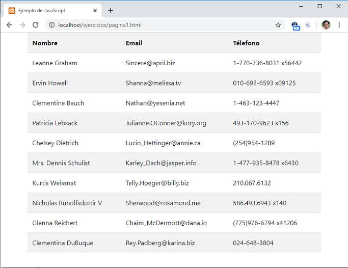

Listado completo de tutoriales
ES6 - API fetch (consumir API públicas) |
Hay muchas empresas y organismos públicos que hacen públicos sus datos y permiten que otros sitios web y aplicaciones puedan consultar dicha información.
Con el API fetch podemos fácilmente acceder a las API que suministran otros sitios web.
Veamos con un ejemplo como consumimos del sitio jsonplaceholder.typicode.com/ datos ficticios sobre 10 usuarios.
Debemos conocer dos cosas para poder consumir los datos:
La URL que nos suministra el recurso, en nuestro caso es:
https://jsonplaceholder.typicode.com/users
La estructura del archivo JSON para conocer los nombres de propiedades que accederemos:
[
{
"id": 1,
"name": "Leanne Graham",
"username": "Bret",
"email": "Sincere@april.biz",
"address": {
"street": "Kulas Light",
"suite": "Apt. 556",
"city": "Gwenborough",
"zipcode": "92998-3874",
"geo": {
"lat": "-37.3159",
"lng": "81.1496"
}
},
"phone": "1-770-736-8031 x56442",
"website": "hildegard.org",
"company": {
"name": "Romaguera-Crona",
"catchPhrase": "Multi-layered client-server neural-net",
"bs": "harness real-time e-markets"
}
},
etc.
Veamos lo sencillo que es recuperar los datos de la petición mediante la API fetch:
<!DOCTYPE html>
<html>
<head>
<title>Ejemplo de JavaScript</title>
<meta charset="UTF-8">
<link href="https://cdn.jsdelivr.net/npm/bootstrap@5.0.2/dist/css/bootstrap.min.css" rel="stylesheet"
integrity="sha384-EVSTQN3/azprG1Anm3QDgpJLIm9Nao0Yz1ztcQTwFspd3yD65VohhpuuCOmLASjC" crossorigin="anonymous">
</head>
<body>
<div class="container">
<div class="row">
<table class="table table-striped" id="tabla1">
</table>
</div>
</div>
<script>
fetch("https://jsonplaceholder.typicode.com/users")
.then(response => response.json())
.then(datos => {
let cad = '<tr><th>Nombre</th><th>Email</th><th>Télefono</th></tr>';
for (let usuario of datos) {
cad += `<tr><td>${usuario.name}</td>
<td>${usuario.email}</td>
<td>${usuario.phone}</td></tr>`;
}
document.getElementById("tabla1").innerHTML = cad;
});
</script>
</body>
</html>
Tenemos como resultado cuando pedimos la página al servidor web:
Solo a efectos que la tabla de datos se muestre con una mejor estética hemos importado de un CDN la librería CSS de Bootstrap:
<link href="https://cdn.jsdelivr.net/npm/bootstrap@5.0.2/dist/css/bootstrap.min.css" rel="stylesheet"
integrity="sha384-EVSTQN3/azprG1Anm3QDgpJLIm9Nao0Yz1ztcQTwFspd3yD65VohhpuuCOmLASjC" crossorigin="anonymous">
Luego en el bloque de HTML hemos dispuesto una tabla HTML vacía, con la intención que en forma dinámica se carguen con los datos que recuperaremos mediante el API fetch:
<div class="container">
<div class="row">
<table class="table table-striped" id="tabla1">
</table>
</div>
</div>
Si se encuentra olvidado de la librería Bootstrap puede recordarlo con el curso de Bootstrap Ya.
Inmediatamente el DOM de la página se encuentra cargado por el navegador web procedemos a llamar a la función 'fetch' y le pasamos como parámetro la URL del recurso que sabemos que retorna los datos de 10 usuarios ficticios:
fetch("https://jsonplaceholder.typicode.com/users")
Enlazamos la promesa que devuelve la función 'fetch' con la función 'then', donde procedemos pedir que se conviertan los datos recuperados a formato JSON:
.then(response => response.json())
Finalmente llamamos al método 'then' de la segunda promesa donde disponemos la función donde concatenamos todos los datos que almacena el array almacenado en el parámetro 'datos':
.then(datos => {
let cad = '<tr><th>Nombre</th><th>Email</th><th>Télefono</th></tr>';
for (let usuario of datos) {
cad += `<tr><td>${usuario.name}</td>
<td>${usuario.email}</td>
<td>${usuario.phone}</td></tr>`;
}
document.getElementById("tabla1").innerHTML = cad;
});
Actualizamos el contenido de la 'tabla1' luego de generar el string respectivo.